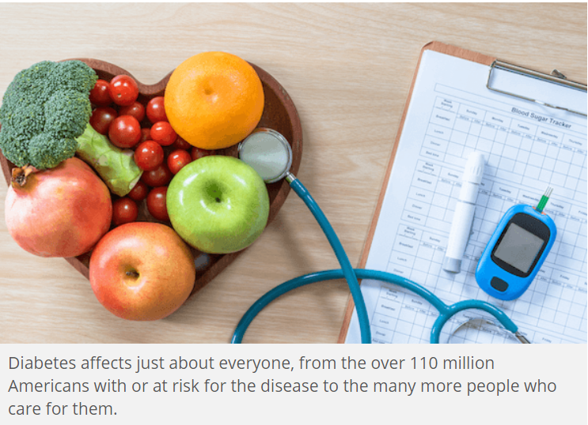
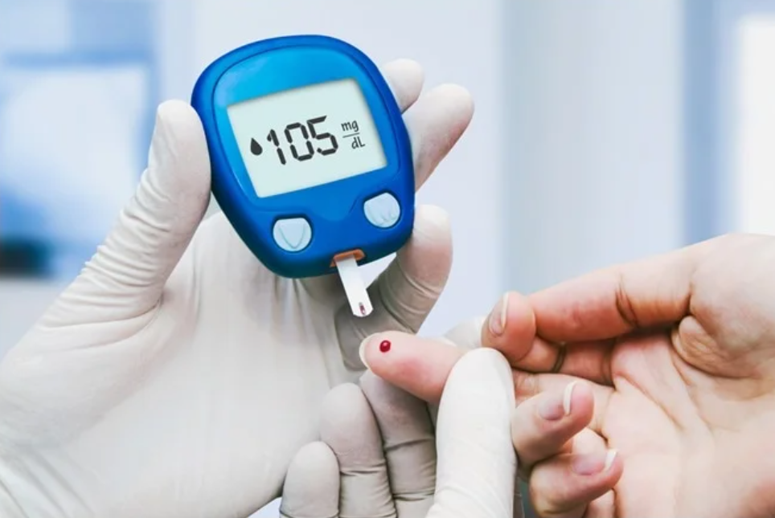

To help me proceed my portfolio, I raised following questions:
1. The most popular diabetes causes ranking
2. The public's focus on diabetes
3. The reliability of current diabetes diagnosis
4. The relationship between lifestyle and diabetes
5. The relationship between local developmental level and diabetes
6. The relationship between race and diabetes
7. The development of diabetes drug and therapies these years
8. The ranking of diseases derived from diabetes
9. The direct economic loss caused by diabetes in recent years
10. The indirect economic loss caused by diabetes in recent years
|
My topic is diabetes mellitus (DM), a disease characterized by a group of metabolic disorders. The number of people having DM keeps growing year by year, and DM becomes a huge challenge not only to medical scientists, but also to all walks of life since DM give arise to many complications. The pathogenesis of DM is associated with dietary habit. In this report, I am going to investigate the origin, distribution and impact of DM.
Causes: The following is a list of disorders that may increase the risk of diabetes:
Genetic defects of β-cell function,
Maturity onset diabetes of the young,
Mitochondrial DNA mutations,
Genetic defects in insulin processing or insulin action,
Defects in proinsulin conversion,
Insulin gene mutations,
Insulin receptor mutations,
Exocrine pancreatic defects,
Chronic pancreatitis,
Pancreatectomy,
Pancreatic neoplasia,
Cystic fibrosis,
Hemochromatosis,
Fibrocalculous pancreatopathy.
Diagnosis: A positive result, in the absence of unequivocal high blood sugar, should be confirmed by a repeat of any of the above methods on a different day. It is preferable to measure a fasting glucose level because of the ease of measurement and the considerable time commitment of formal glucose tolerance testing, which takes two hours to complete and offers no prognostic advantage over the fasting test.
Prevention: There is no known preventive measure for type 1 diabetes. Type 2 diabetes which accounts for 85 to 90% of all cases worldwide can often be prevented or delayed by maintaining a normal body weight, engaging in physical activity, and eating a healthy diet.
Lifestyle:People with diabetes can benefit from education about the disease and treatment, dietary changes, and exercise, with the goal of keeping both short-term and long-term blood glucose levels within acceptable bounds. In addition, given the associated higher risks of cardiovascular disease, lifestyle modifications are recommended to control blood pressure.
Medications: Most medications used to treat diabetes act by lowering blood sugar levels through different mechanisms. There is broad consensus that when people with diabetes maintain tight glucose control, keeping the glucose levels in their blood within normal ranges so that they experience fewer complications, such as kidney problems or eye problems.
|